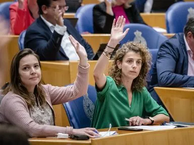
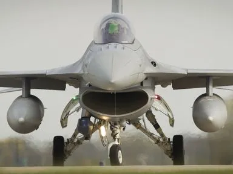
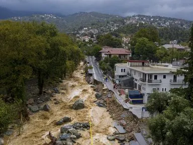
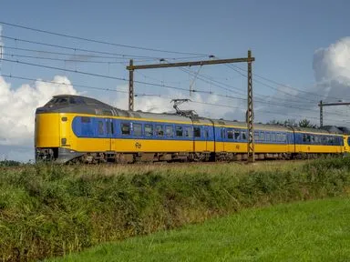

Excuses OM na onterechte beschuldigingen over klimaatdemonstratie op Schiphol
Zeven mensen hadden onterecht een waarschuwingsbrief gekregen waarin stond dat ze bij een demonstratie op Schiphol een misdrijf hadden begaan.
Kabinet wil combinatie van systemen in nieuwe spaartaks
Burgers kunnen de komende tijd commentaar leveren op de plannen. Het nieuwe stelsel zal pas op zijn vroegst in 2027 kunnen ingaan.

VVD kiest voor ervaring in top kandidatenlijst Tweede Kamer
In de top-5 staan ook de bewindslieden Van der Burg en van der Wal.

Belgische F-16's naar Oekraïne 'ondenkbaar' • Schade en gewonden bij droneaanvallen over en weer
In dit liveblog lees je de belangrijkste ontwikkelingen rond de oorlog in Oekraïne.

Dodental door overstromingen in Griekenland, Turkije en Bulgarije loopt op
Storm Daniel heeft een spoor van vernieling achtergelaten. Op verschillende plekken zijn straten en huizen onder water gelopen en zijn wegen en bruggen ingestort.

NS heeft nieuwe en duurdere windstroom, prijs treinkaartje niet extra omhoog
De vervoerder stapt over van Eneco naar de Provinciale Zeeuwse Energie Maatschappij. Shell controleert of stroom groen is.